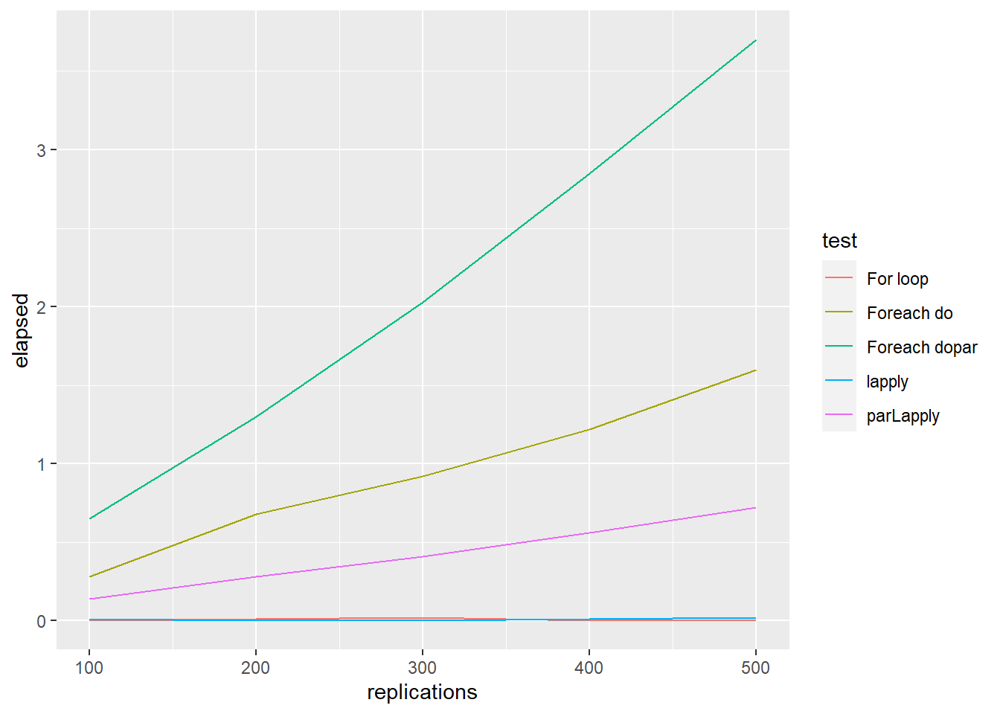
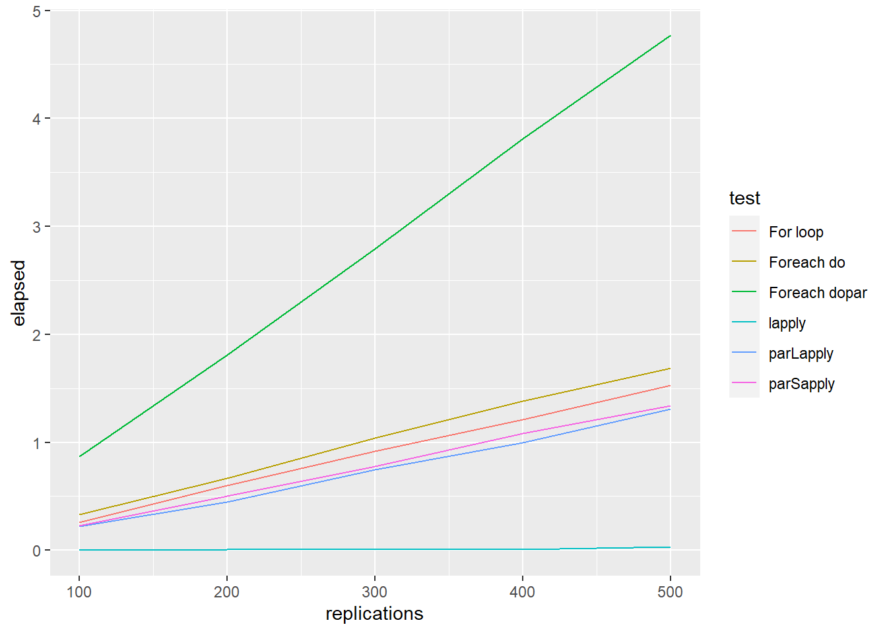
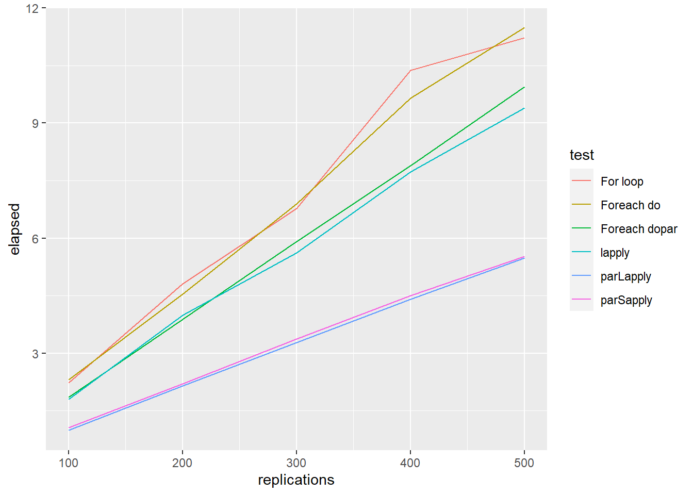

7 Dealing with Big Data in R
In the era of big data, we can have access to large volumes of data obtained from our population of interest. Traditional algorithms implemented for even the simplest statistical methods (descriptive, linear regression, …) require a lot of computing time. To address this issue, one of the approaches we have is to divide our data into smaller sets that do not require as much computational cost and to combine these results in a clever way that allows us to solve the largest problem. This can be done by parallelizing the calculations since even laptops already have multiple computing cores, and/or combining the calculations with paradigms such as MapReduce that has been designed to deal with Big Data efficiently. In this section we will learn how to:
- Parallelize in R
- Use MapReduce
- Implement multiple linear regression in a distributed system using MapReduce paradigm
7.1 Nodes, cores, processes and threads
The terminology of nodes, cores, processes and threads is not universal. Depending on the computer, software (etc.), they can have various meanings. Typical examples: socket instead of node; cpu instead of core; task instead of process. Supercomputers have complex architectures, mainly due to their processors capability to work together on the same memory space. More precisely, the smallest computing units, called cores, are grouped in nodes. All the cores in one node share the same memory space. In other terms, the cores of the same node can operate on the same data, at the same time; no need for sending the data back and forth. This hardware architecture is summarized in this figure that shows a simple schematic of a 16-core node. The node contains two CPUs and each CPU consists of 8 cores. The schematic also shows the attached memory and the connections between the CPUs and memory.

Nodes, cores and processors
Nodes: Refers to the physical machine/server. In current systems, a node would typically include one or more processors, as well as memory and other hardware.
Processor: Refers to the central processing unit (CPU), which contains one or more cores.
Cores: Refers to the basic computation unit of the CPU. This is unit that carries out the actual computations.
So in essence, each compute node contains one or more processors/CPUs and each CPU will typically consist of one or more cores.
7.2 Paralelización
When using a single CPU, or serial computing, the problem size is limited by the available memory and performance. As data sizes become larger and systems become more complex, programs/applications rapidly run out of resources. Effectively utilising parallel computing can overcome these limitations. Parallel computing has become essential to solving big problems (high resolution, lots of timesteps, etc.) in science and engineering.
Parallel computing can be simply defined as the simultaneous use of multiple processors/computers, i.e. parallel computers, to solve a computational problem. The general pattern is:
- The problem is broken down into discrete sections or separate tasks.
- Each processor works on its task or section of the problem. With multiple processors this means that several tasks can be processed at any given time.
- Processors exchange information with other processors, when required.
It allows leveraging the resources of multiple processors/computers, increasing the resources available to the application/software. This enables the execution of tasks that do not fit on a single CPU and the completion of the tasks in a reasonable time. This has many benefits. For instance, we can add more data points which can translate to the use of bigger domains, improved spatial resolution or the inclusion of more particles in a simulation. Faster execution time can translate to increased number of solutions in a given time or a faster time to solution.
7.2.2 Distributed Memory Programming
Programming for distributed memory machines provides a means to take advantage of more resources than those available on a shared memory machine. In addition, code developed for distributed memory machines can be used on shared memory machines. However, this type of programming is generally more difficult than shared memory programming. Since each processor only has access to its local memory, the programmer is responsible for mapping data structures across the separate nodes. In addition, there is a need to coordinate the communications between nodes, i.e. message passing, to ensure that a node can access remote data when it is needed for a local computation. The standard library used for this is MPI.
Next figure illustrate the difference between both approaches

Memory Organization: (a) Shared Memory, (b) Distributed Memory
Doing these tasks in R without strong knowledge in informatics can be hard. However, there are several R packages to perform parallel computing. The reason for using doParallel package, and not parallel, is that the parallel package is not working entirely on Windows and you had to write different code for it to work. The doParallel package is trying to make it happen on all platforms: UNIX, LINUX and WINDOWS, so it’s a pretty decent wrapper. To me, the most simple way of doing parallelization is to use mclapply() function from parallel but this cannot be used in Window.
Let us assume we want to compute \(f(x)=x^2 + x\) of 10 numbers stored in a vector called vec.
set.seed(1234)
f <- function(x) x^2 + x
vec <- rpois(10, lambda=200)We can do the following strategies:
- Looping
forFunction <- function(x) {
ans <- rep(NA, length(x))
for(i in vec)
{
ans[i] <- f(i)
}
ans
}- Using
lapply ()orsapply ()function
lapplyFunction <- function(x) {
ans <- sapply(x, f)
ans
}- Using
doParallel::parLapply()function
We need first to create the cluster
library(doParallel)
ncores <- detectCores() - 1
registerDoParallel(cores=ncores)
cl <- makeCluster(ncores) Then, we can use the parallel implementation of lapply
parLapplyFunction <- function(cl, x, f){
result <- parLapply(cl=cl, X=x, fun=f)
result
}- Using
doParallel::foreach()function
foreachDoParFunction <- function(x) {
result <- foreach(i=x, .export="f") %dopar% f(i)
result
} foreachDoFunction <- function(x) {
result <- foreach(i=x, .export="f") %do% f(i)
result
} - Using
parallel::mclapply()function
# Only works in Linux (Windows ncores must be set equal to 1)
result <- mclapply(x, f, mc.cores=ncores)In order to compare computation time, we can run
system.time(result <- lapply(vec, f)) user system elapsed
0.02 0.00 0.02 Nonetheless, rbenchmark function serves as a more accurate replacement of the often seen system.time() function and the more sophisticated system.time(replicate(1000, expr)) expression (that incorporates variability). It tries hard to accurately measure only the time it takes to evaluate expr. To achieved this, the sub-millisecond (supposedly nanosecond) accurate timing functions most modern operating systems provide are used. Additionally all evaluations of the expressions are done in C code to minimize any overhead. In our example:
library(rbenchmark)
library(doParallel)
ncores <- detectCores() - 1
registerDoParallel(cores=ncores)
cl <- makeCluster(ncores)
testdata1 <- benchmark("For loop" = forFunction(vec),
"lapply" = lapplyFunction(vec),
"Foreach dopar" = foreachDoParFunction(vec),
"Foreach do" = foreachDoFunction(vec),
"parLapply" = parLapplyFunction(cl=cl, x=vec, f=f),
columns=c('test', 'elapsed', 'replications'),
replications = c(100, 200, 300, 400, 500))
ggplot() +
geom_line(aes(x = replications, y = elapsed, colour = test), data = testdata1)
Another example could be to compare the performance of the five methods for matrix multiplication
set.seed(12345)
A <- matrix(rnorm(20), nrow=4, ncol=5)
B <- matrix(rnorm(20), nrow=4, ncol=5)
FUN <- function(i, A, B){
crossprod(A,B)
}
a <- as.list(1:10)
testdata2 <- benchmark("For loop" = for(i in 1:length(a)){FUN(i, A, B)},
"lapply" = lapply(a, FUN = FUN, A=A, B=B),
"Foreach dopar" = foreach(i = 1:10) %dopar% FUN(i, A, B),
"Foreach do" = foreach(i = 1:10) %do% FUN(i, A, B),
"parLapply" = parLapply(cl = cl, X = a, fun = FUN, A=A, B=B),
"parSapply" = parSapply(cl = cl, X = a, FUN = FUN, A=A, B=B),
columns=c('test', 'elapsed', 'replications'),
replications = c(100, 200, 300, 400, 500))
ggplot() +
geom_line(aes(x = replications, y = elapsed, colour = test), data = testdata2)
Finally, we could also compare the performance of the five methods for fitting generalized linear model
FUN <- function(i) {
ind <- sample(100, 100, replace=TRUE)
mod <- glm(Species ~ Sepal.Length, family=binomial(logit), data = iris[ind,])
coefficients(mod)
}
a <- as.list(1:10)
testdata3 <- benchmark("For loop" = for(i in 1:length(a)){ FUN(a[[i]])},
"lapply" = lapply(a, FUN = FUN),
"Foreach dopar" = foreach(i = 1:10) %dopar% FUN(i),
"Foreach do" = foreach(i = 1:10) %do% FUN(i),
"parLapply" = parLapply(cl = cl, X = a, fun = FUN),
"parSapply" = parSapply(cl = cl, X = a, FUN = FUN),
columns=c('test', 'elapsed', 'replications'),
replications = c(100, 200, 300, 400, 500))
ggplot() +
geom_line(aes(x = replications, y = elapsed, colour = test), data = testdata3)
stopCluster(cl)To sum up, generally, parLapply () perform better than foreach (). However, for all parallel implementation methods, the increase in terms of efficiency is not proportional to the number of cores being used (Theoretical efficiency).
7.3 MapReduce
MapReduce is a programming model and an associated implementation for processing and generating big data sets with a parallel, distributed algorithm on a cluster. A MapReduce program is composed of a map procedure, which performs filtering and sorting (such as sorting students by first name into queues, one queue for each name), and a reduce method, which performs a summary operation (such as counting the number of students in each queue, yielding name frequencies). The “MapReduce System” (also called “infrastructure” or “framework”) orchestrates the processing by marshalling the distributed servers, running the various tasks in parallel, managing all communications and data transfers between the various parts of the system, and providing for redundancy and fault tolerance. The model is a specialization of the split-apply-combine strategy for data analysis. It is inspired by the map and reduce functions commonly used in functional programming. There are two main frameworks to deal with Big Data and where MapReduce can be applied efficiently
- Hadoop provides support to perform MapReduce operations over a distributed file system of large data sets across clusters of computers using simple programming models. It is designed to scale up from single servers to thousands of machines, each offering local computation and storage.
- Spark provides a richer set of verbs beyond MapReduce to facilitate optimizing code running in multiple machines. Spark also loaded data in-memory, making operations much faster than Hadoop’s on-disk storage.
Thre are some pacakges to connect R and both Hadoop and Spark, but they use is beyond the scope of this short introduction to Big Data analysis.
Next figure illustrate how to use MapReduce to count words in two different text files stored in different machines. The map operation splits each word in the original file and outputs a new word-counting file with a mapping of words and counts. The reduce operation can be defined to take two word-counting files and combine them by aggregating the totals for each word; this last file will contain a list of word counts across all the original files. Counting words is often the most basic MapReduce example, but we can also use MapReduce for much more sophisticated and interesting applications in statistics.
 The MapReduce paradigm has long been a staple of big data computational strategies. However, properly leveraging MapReduce in R can be a challenge, even for experienced users. To get the most out of MapReduce, it is helpful to understand its relationship to functional programming. Functional programming, in a broad sense, is the one that some functions allows to have another function in one of its arguments. For instance, the function
The MapReduce paradigm has long been a staple of big data computational strategies. However, properly leveraging MapReduce in R can be a challenge, even for experienced users. To get the most out of MapReduce, it is helpful to understand its relationship to functional programming. Functional programming, in a broad sense, is the one that some functions allows to have another function in one of its arguments. For instance, the function sapply():
ff <- function(x) if(x > 0) log(x) else log(-x)^2
sapply(-4:10, ff) [1] 1.9218121 1.2069490 0.4804530 0.0000000 Inf 0.0000000
[7] 0.6931472 1.0986123 1.3862944 1.6094379 1.7917595 1.9459101
[13] 2.0794415 2.1972246 2.3025851Functional programming is a very powerful tool that allows you to program in the following way:
- Create small and simple functions that solve a small and bounded problem
- Apply these functions to homogeneous groups of values.
In the previous example, we have built an ff function and through the sapply () function we have applied it to a list of homogeneous values: the numbers from -4 to 10.
There are many functions in R, some of which you have already seen, that take others as arguments. Some of the most common are:
- sapply y lapply
- tapply
- apply y mapply
- Las funciones ddply, ldply, etc. del paquete
plyr
A very common example of this type of functions is used to inspect the type of columns in a table since they take advantage of the fact that a table is a list of columns and go through them one by one
lapply(iris, class)$Sepal.Length
[1] "numeric"
$Sepal.Width
[1] "numeric"
$Petal.Length
[1] "numeric"
$Petal.Width
[1] "numeric"
$Species
[1] "factor"
$Y
[1] "numeric"sapply(iris, length)Sepal.Length Sepal.Width Petal.Length Petal.Width Species
150 150 150 150 150
Y
150 One of the advantages of this type of programming is that the code is shorter and more readable. We must remember that these functions include the argument ... that allows to pass additional arguments to the function they call. For example this function would do the same as the previous one, but it would be more generic since it would allow calculations by varying the s argument.
ff2 <- function(x, s) {
if(x > s) log(x) else log(-x)^2
}
sapply(-4:10, ff2, s=0) [1] 1.9218121 1.2069490 0.4804530 0.0000000 Inf 0.0000000
[7] 0.6931472 1.0986123 1.3862944 1.6094379 1.7917595 1.9459101
[13] 2.0794415 2.1972246 2.30258517.3.1 Map
The MapReduce methodology is also implemented in base R (Map () and Reduce () functions) as well as in tidyverse. Function Map () applies one function to all elements from a list o vector:
map(YOUR_LIST, YOUR_FUNCTION)
or, graphically:

Map
Previous operations could also be executed by using this code (sapply () es un caso especial de la función Map ()):
Map(ff, c(9, 16, 25))[[1]]
[1] 2.197225
[[2]]
[1] 2.772589
[[3]]
[1] 3.218876y
Map(ff2, c(9, 16, 25), s=0)[[1]]
[1] 2.197225
[[2]]
[1] 2.772589
[[3]]
[1] 3.218876Another advantage appears when we want to vary more than one argument. With lapply (), only one argument varies; the others are fixed. For example, how would you find a weighted mean when you have two lists, one of observations and the other of weights?
# Generate some sample data
xs <- replicate(5, runif(10), simplify = FALSE)
ws <- replicate(5, rpois(10, 5) + 1, simplify = FALSE)
str(xs)List of 5
$ : num [1:10] 0.767 0.671 0.909 0.198 0.436 ...
$ : num [1:10] 0.296 0.306 0.126 0.518 0.831 ...
$ : num [1:10] 0.607 0.6956 0.1348 0.0715 0.1021 ...
$ : num [1:10] 0.655 0.107 0.925 0.557 0.742 ...
$ : num [1:10] 0.149 0.47 0.668 0.194 0.451 ...str(ws)List of 5
$ : num [1:10] 6 3 5 4 8 13 5 5 3 5
$ : num [1:10] 3 9 6 5 6 4 6 6 6 5
$ : num [1:10] 3 14 12 4 8 8 4 8 3 4
$ : num [1:10] 7 7 8 5 9 7 6 6 8 4
$ : num [1:10] 4 5 7 4 3 4 8 4 4 7# compute the weighted.mean
unlist(Map(weighted.mean, xs, ws))[1] 0.4676235 0.5447004 0.3928258 0.4760168 0.5505697If some of the arguments should be fixed and constant, use an anonymous function:
Map(function(x, w) weighted.mean(x, w, na.rm = TRUE), xs, ws)[[1]]
[1] 0.4676235
[[2]]
[1] 0.5447004
[[3]]
[1] 0.3928258
[[4]]
[1] 0.4760168
[[5]]
[1] 0.55056977.3.2 Reduce
Another way of thinking about functionals is as a set of general tools for altering, subsetting, and collapsing lists. Every functional programming language has three tools for this: Map(), Reduce(), and Filter(). We have seen Map() already, and next we describe Reduce(), a powerful tool for extending two-argument functions. Filter() is a member of an important class of functionals that work with predicates, functions that return a single TRUE or FALSE (we will not cover that).
Reduce() reduces a vector, x, to a single value by recursively calling a function, f, two arguments at a time. It combines the first two elements with f, then combines the result of that call with the third element, and so on. Calling Reduce(f, 1:3) is equivalent to f(f(1, 2), 3)

Reduce
The following two examples show what Reduce does with an infix and prefix function:
Reduce(`+`, 1:3) # -> ((1 + 2) + 3)[1] 6Reduce(sum, 1:3) # -> sum(sum(1, 2), 3)[1] 6The essence of Reduce() can be described by a simple for loop:
Reduce2 <- function(f, x) {
out <- x[[1]]
for(i in seq(2, length(x))) {
out <- f(out, x[[i]])
}
out
}Reduce() is also an elegant way of extending a function that works with two inputs into a function that can deal with any number of inputs. It is useful for implementing many types of recursive operations, like merges and intersections. Imagine you have a list of numeric vectors, and you want to find the values that occur in every element:
l <- replicate(5, sample(1:10, 15, replace = T), simplify = FALSE)
str(l)List of 5
$ : int [1:15] 9 7 9 6 6 6 10 4 3 8 ...
$ : int [1:15] 8 3 7 1 9 5 3 8 10 7 ...
$ : int [1:15] 8 6 9 8 9 3 9 10 9 4 ...
$ : int [1:15] 7 4 10 8 6 6 3 7 6 4 ...
$ : int [1:15] 10 7 8 10 5 1 6 9 6 8 ...You could do that by intersecting each element in turn:
intersect(intersect(intersect(intersect(l[[1]], l[[2]]),
l[[3]]), l[[4]]), l[[5]])[1] 9 6 10 8That’s hard to read. With Reduce(), the equivalent is:
Reduce(intersect, l)[1] 9 6 10 87.4 Example: Linear regression for Big Data
In this section, we describe a very nice application of MapReduce framework to a Big Data problem.
There are several problems that require the analysis of large volumes of information. The analysis at very large scale of data is a challenging task since the available information cannot be practically analyzed on a single machine due to the sheer size of the data to fit in memory. In order to overcome this difficulty, high-performance analytical systems running on distributed environments can be used. To this end standard analytics algorithms need to be adapted to take advantage of cloud computing models which provide scalability and flexibility. Here, we describe an approach that introduces a new distributed training method for Multiple Linear Regression which will be based on the QR decomposition and the ordinary least squares method adapted to MapReduce framework. The method is called MLR-MR and is described in (Moufida Adjout Rehab and Faouzi Boufares, 2105). The paper is also available in our Moodle.
In this figure we can observe as the model fitting using MLR-MR algorithm is dramatically reduced when the number of MapReduce processors increases.

Speedup training MLR-MR with different MapReduce working nodes
Let us start by recalling how to describe linear regression using the classical matrix notation:
\[\mathbf{Y}=\mathbf{X}\mathbf{\beta}+\mathbf{\varepsilon}.\]
The ordinary least square (OLS) estimate of \(\mathbf{\beta}\) is \[\widehat{\mathbf{\beta}}=[\mathbf{X}^T\mathbf{X}]^{-1}\mathbf{X}^T\mathbf{y}\]. To illustrate, let us consider the “mtcars” example, and run this regression:
data(mtcars)
(mod <- lm(mpg ~ wt + cyl, data = mtcars))
Call:
lm(formula = mpg ~ wt + cyl, data = mtcars)
Coefficients:
(Intercept) wt cyl
39.686 -3.191 -1.508 The algorithm implemented in the lm () function uses the QR decomposition of \(\mathbf{X},\) \[\mathbf{X}=\mathbf{Q}\mathbf{R},\] where \(\mathbf{Q}\) is an orthogonal matrix (i.e. \(\mathbf{Q}^T\mathbf{Q}=\mathbb{I}\)).Then,
\[\widehat{\mathbf{\beta}}=[\mathbf{X}^T\mathbf{X}]^{-1}\mathbf{X}^T\mathbf{y}=\mathbf{R}^{-1}\mathbf{Q}^T\mathbf{y}\]
Y <- mtcars$mpg
#similar to cbind(1, mtcars$wt, mtcars$cyl)
X <- model.matrix(~ wt + cyl, data=mtcars)
QR <- qr(as.matrix(X))
R <- qr.R(QR)
Q <- qr.Q(QR)
solve(R) %*% t(Q) %*% Y [,1]
(Intercept) 39.686261
wt -3.190972
cyl -1.507795We can parallelise computations using the MLR-MR method as follows:
Consider \(m\) blocks, for instance 3 (given tha we have 4 cores)
m <- 3and split vectors and matrices
\[\mathbf{y}=\left[\begin{matrix}\mathbf{y}_1\\\mathbf{y}_2\\\vdots \\\mathbf{y}_m\end{matrix}\right]\]
and
\[\mathbf{X}=\left[\begin{matrix}\mathbf{X}_1\\\mathbf{X}_2\\\vdots\\\mathbf{X}_m\end{matrix}\right]=\left[\begin{matrix}\mathbf{Q}_1^{(1)}\mathbf{R}_1^{(1)}\\\mathbf{Q}_2^{(1)}\mathbf{R}_2^{(1)}\\\vdots \\\mathbf{Q}_m^{(1)}\mathbf{R}_m^{(1)}\end{matrix}\right]\]
In R to split vectors and matrices we can use these two functions:
chunk <- function(x,n) split(x, cut(seq_along(x), n, labels = FALSE))
splitMatByRow = function(mat, size){
row.index <- chunk(1:nrow(mat), size)
lapply(row.index, function(val) mat[val, ])
}We can do that with our data
x.block <- splitMatByRow(X, m)
y.block <- splitMatByRow(matrix(Y, ncol = 1), m)Then, we get small QR decomposition (per subset). This step correspond to de Map step in the MapReduce framework
# Algorithm 2 Mapper function in step1
getQR <- function(x){
qrresult <- qr(x)
ans <- list(Q=qr.Q(qrresult), R=qr.R(qrresult))
ans
}
x.block.qr <- Map(getQR, x.block)Now, consider the QR decomposition of \(\mathbf{R}^{(1)}\) which is the first step of the reduce part
\[\mathbf{R}^{(1)}=\left[\begin{matrix}\mathbf{R}_1^{(1)}\\\mathbf{R}_2^{(1)}\\\vdots \\\mathbf{R}_m^{(1)}\end{matrix}\right]=\mathbf{Q}^{(2)}\mathbf{R}^{(2)}\] where
\[\mathbf{Q}^{(2)}=\left[\begin{matrix}\mathbf{Q}^{(2)}_1\\\mathbf{Q}^{(2)}_2\\\vdots\\\mathbf{Q}^{(2)}_m\end{matrix}\right]\]
that can be computed as
# Algorithm 3 Reducer function in step1
Rs <- Map(function (l) l$R, x.block.qr)
Rtemp <- Reduce(rbind, Rs)
qrresult <- qr(Rtemp)
Rtemp.qr <- list(Q=qr.Q(qrresult), R=qr.R(qrresult))
R.final <- Rtemp.qr$R
Rtemp.Q.divide <- splitMatByRow(Rtemp.qr$Q, m)Define – as step 2 of the reduce part
\[\mathbf{Q}^{(3)}_j=\mathbf{Q}^{(2)}_j\mathbf{Q}^{(1)}_j\]
Q.result = list()
for (i in 1:m){
Q.result[[i]] <- x.block.qr[[i]]$Q %*% Rtemp.Q.divide[[i]]
}and
\[\mathbf{V}_j=\mathbf{Q}^{(3)T}_j\mathbf{y}_j\]
# Algorithm 4 Reduce function in step2
V = list()
for (i in 1:m){
V[[i]] <- crossprod(Q.result[[i]], y.block[[i]])
}and finally set – as the step 3 of the reduce part
\[\widehat{\mathbf{\beta}}=[\mathbf{R}^{(2)}]^{-1}\sum_{j=1}^m\mathbf{V}_j\]
# Algorithm 5 Reduce function in step3
V.sum <- Reduce('+', V)
beta <- as.numeric(solve(R.final) %*% V.sum)Let us compare the results
cbind(lm=coef(mod), parallel=beta) lm parallel
(Intercept) 39.686261 39.686261
wt -3.190972 -3.190972
cyl -1.507795 -1.507795# error
sum((beta - coef(mod)) ** 2)[1] 2.607678e-28| EJERCICIO (Entrega en Moodle: P2-MapReduce): |
| Realiza todos las operaciones que puedas usando Map() o Reduce() para resolver los siguientes ejercicios: |
1. Genera una lista con 3 vectores que tenga 10 letras seleccionadas al azar (usa letters). Devuelve la intersección de esos tres vectores (intersect()). |
| 2. Crea una función a la que se le pase una lista con varios vectores de datos continuos (pueden tener distinto tamaño) y que devuelva la media de todos los datos. Pista: usa la idea de la media ponderada. Úsala para calular la media en este ejemplo: |
X <- list(estudio1=c(120, 134, 156, 167, 122), estudio2=c(134, 116, 123), estudio3=c(110, 145, 124, 145, 160, 134, 122), estudio4=c(114, 113, 129, 178, 155, 144, 134, 145)) |
| 3. Re-implementa la función que hay en la solución para LOOCV que vimos en clase usando MapReduce. |